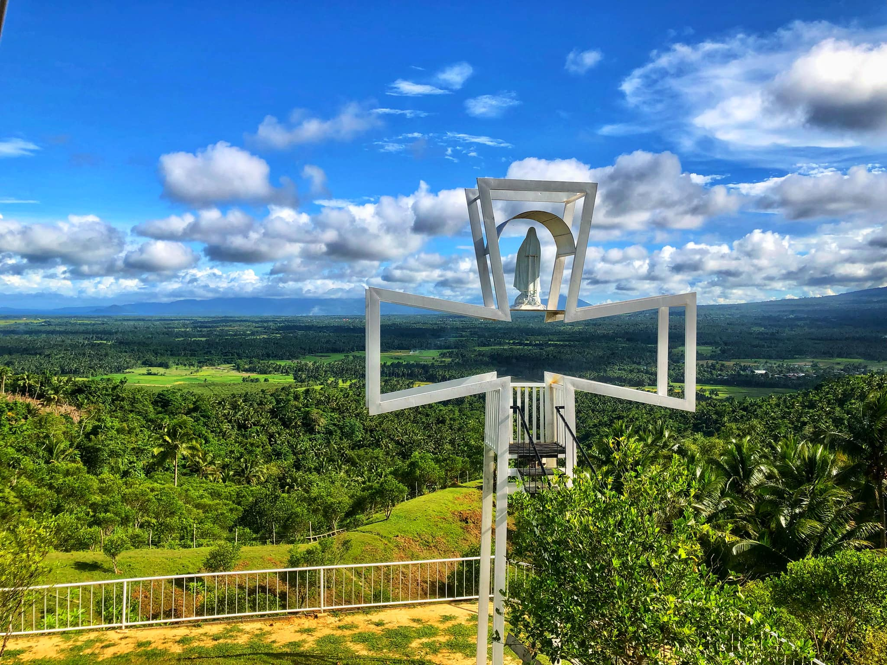

Bamboo Furniture
Senita's family legacy is making a bamboo furniture. A livelihood project that showcases local craftsmanship, offering durable and eco-friendly bamboo furniture for the community.

Basket
A traditional livelihood craft that highlights the skill of local weavers, producing strong and eco-friendly baskets for daily use and community trade.

Cj's Peak
A scenic spot in Barangay Gubat that offers breathtaking views of the mountains and sea, serving as a peaceful destination for relaxation and tourism.